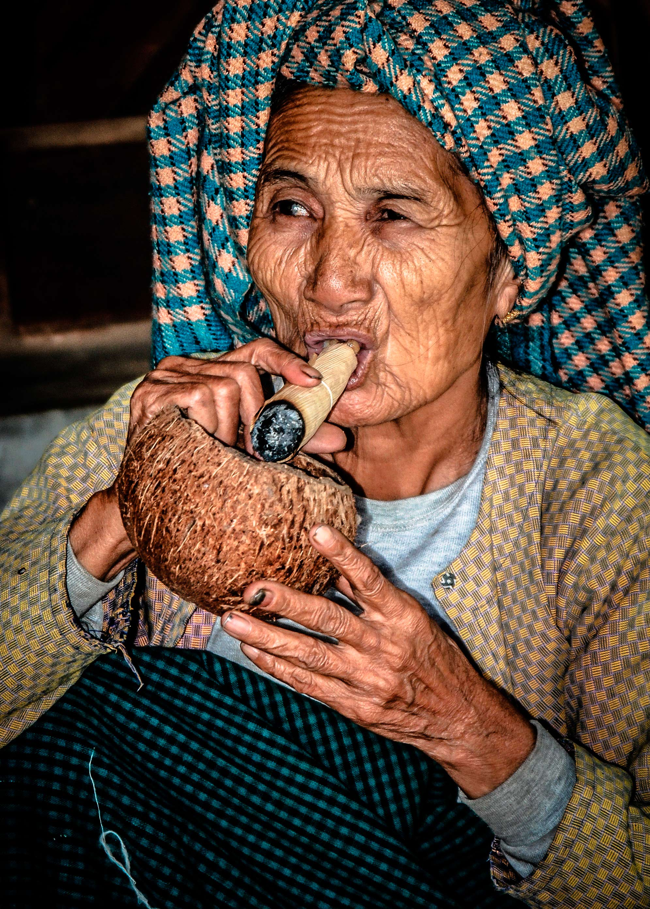

Information om Burma
Holder du af unaturligt smuk natur, bjerge, søer, rismarker, floder - og en befolkning af forunderlig elegance og mildhed, er rejser til Myanmar noget for dig. Horisonts rejser til Myanmar byder på det hele og er blandt vores gæsters absolutte favoritter.
På vores rejser til Myanmar er det nemt at forveksle det tilbagestående med idyl og romantik, og den teknologiske udvikling er skam hastigt i gang i landets største by, Yangon.
Alligevel forbliver rejser til Myanmar en slags invitation til et kig tilbage til tiden - vi ser okser trække ploven gennem rismarker, munke, der lever asketiske liv i klostre, som de har gjort det i tusind år, og burmesiske kvinder, der pynter sig med blomster – i perfekt harmoni med deres vidunderlige smil.
Horisonts rejser til Myanmar giver dig et indblik i Myanmars kultur og forklarer landets særegne stil. Forklaringerne er mange. En væsentlig årsag ligger i burmesernes religiøse kulturarv, som du på vores rejser ser komme til udtryk i deres venlige og tilsyneladende fredfyldte livsstil.
Vi har lavet rejser til Myanmar siden 2008, længe inden det gik op for andre rejsebureauer, at landet var et skatkammer at besøge. Vores Myanmar-rejser foregår altid i små grupper med hovedvægt på vores rejselederes unikke viden og personlige forhold til destinationen.
Vælg din rejse med omhu - det fortjener du!
BAGAN
PAGODE-SLETTEN
Bagan er Myanmars gamle hovedstad i den nordlige del af landet. Byen spreder sig nu ud over den gamle bykerne, og udenfor byen ligger en slette med mere end 2.000 pagoder med hver deres karakteriske udtryk. Det giver mulighed for at cykle rundt blandt templerne eller blot udvælge et par stykker, hvorfra du kan nyde den smukke udsigt og se solen gå ned over sletten. Hvis du da ikke ønsker at se det hele fra oven i luftballon.
MANDALAYU
BEIN’S BRIDGEN
Mandalay er Myanmars kulturelle hovedstad, med dens koloniale stemning og nem adgang til en mængde seværdigheder, herunder det tidligere kongelige palads, det gyldne munkekloster, Shwe Kyaung, Kuthodaw-pagoden, og U Bein’s Bridge. Den smukke U Bein’s Bridge er en 1,2 km lang gangbro over Taungthaman-søen, bygget i teak-træ. Broen ligger i Amarapura uden for Mandalay og blev opført i 1782, da Amarapura var royal hovedstad. Broen bruges dagligt af de mange munke og den lokale befolkning og er et af de mest fotograferede bygningsværker i Myanmar.
INLE SØEN
BYER PÅ PÆLE
Inle søen er 22 km lang og 11 km bred. En stor del af søen er dækket af vandhyacinter, hvilket får den til at ligne en magisk have. Her finder vi små byer på pæle og her holder de såkaldte “et-benede roere” til - det er fiskere, der på et ben står i deres båd, mens de ror med det andet. På de fleste af vores rejser bor vi ikke på selve søen, men i den lille hyggelige Nyaung Shwe. Byen var hovedsæde for en af de tre sawbwas - lokale konger, der regerede Shanstaten. De to øvrige var i Hsipaw og i Kyaing Tong. Nyaung Shwe er en hyggelig lille by uden høje huse og trafik. Den har et godt lokalt marked og er nem at spadsere omkring i.

YANGON
SWEDAGON PAGODEN
Alle rejser til Myanmar indeholder et besøg ved Myanmars største turistattraktion, den fantastiske Swedagon pagode, der siges at være blevet bygget for at huse 8 af Buddhas hellige hår. Vi nyder solnedgangen over den 100 meter høje, forgyldte pagode udsmykket med diamanter, rubiner, safirer og andre ædelstene - et smukt syn, der afslutter de fleste af vores rejser til Myanmar.